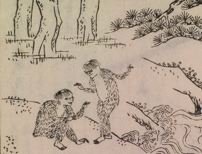

河太郎；カワタロウ，河童；カッパ

川辺で2体の河太郎が向き合っている。何か語らっているようである。2体とも毛に覆われ、頭頂には皿のようなものがある。
著作者：平瀬徹斉／出典：親書誌：U426_nichibunken_0237：日本山海名物図絵；ニホンサンカイメイブツズエ／日付：2010／資源識別子：U426_nichibunken_0237_0002_0000
Copyright (c)2010- International Research Center for Japanese Studies, Kyoto, Japan. All rights reserved.